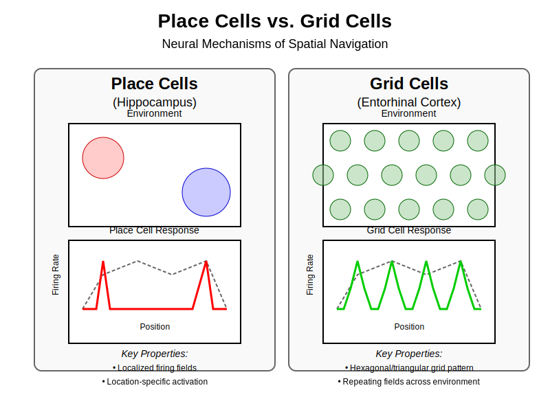
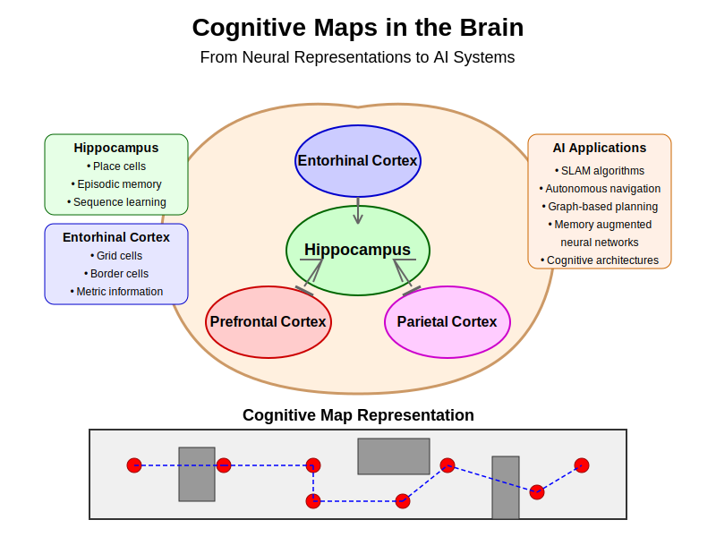

Chapter 3: Spatial Navigation – Place & Grid Cells#
3.0 Chapter Goals#
Understand the neural basis of spatial navigation
Explore the organizational principles of place and grid cells
Connect spatial coding in the brain to computational principles in AI
Implement simple models of neural spatial representation
3.1 Hippocampal Formation: Organization and Cell Types#
The hippocampal formation is a brain structure critical for spatial navigation and memory formation. This section examines its anatomical organization and the specialized cells that form the brain’s navigational system.
Anatomical Organization#
The hippocampal formation consists of several interconnected regions:
Hippocampus proper (CA1-CA3): Processes and stores spatial memories
Dentate gyrus (DG): Performs pattern separation of similar spatial inputs
Entorhinal cortex (EC): Serves as the main interface between hippocampus and neocortex

Cellular Organization: The Pyramidal Cell#
The principal cells in the hippocampus are pyramidal neurons, which have:
A triangular cell body (soma)
Apical dendrites extending toward the surface
Basal dendrites reaching outward and downward
A single axon that projects to other regions
This cellular architecture is significant because:
The layered organization creates a structured processing pipeline
The dendritic arbors receive thousands of inputs from different sources
The hierarchical arrangement enables complex pattern recognition
The pyramidal cell architecture parallels the computational structure seen in artificial neural networks, particularly in how information flows through layers and combines across multiple inputs. This similarity is not coincidental—early neural network designs were inspired by these biological principles.
3.2 Place Cells: The Brain’s Spatial Address System#
Place cells are pyramidal neurons in the hippocampus (primarily in regions CA1 and CA3) that exhibit location-specific firing patterns.

Figure 3.1: Comparison of place cell and grid cell activity patterns. Place cells fire in specific locations within an environment, while grid cells exhibit repeating hexagonal firing patterns across the entire space.
Discovery and Properties#
John O’Keefe discovered place cells in 1971 while recording from freely moving rats. These neurons show remarkable properties:
Each cell fires strongly when the animal is in a specific location (“place field”)
Place fields are typically 20-50 cm in diameter in a rat-sized environment
Different place cells code for different locations, creating a distributed map
The collection of all place cells forms a complete representation of the environment

Key Properties of Place Cells#
Place cells exhibit several important characteristics that make them ideal for spatial representation:
Spatial Specificity: Place cells remain silent most of the time, firing only when the animal enters a specific location.
Environmental Remapping: When moved to a new environment, place cells can:
Undergo “global remapping” where cells completely change their firing locations
Show “rate remapping” where the same locations are encoded but with different firing rates
Stable but Plastic Representation: Place fields are stable over days or weeks in familiar environments but can rapidly reorganize when environments change.
Multimodal Integration: Place cell firing integrates various inputs:
Visual landmarks
Self-motion cues (velocity, direction)
Olfactory and tactile information
Goal location and task demands
Computational Principles#
Place cells effectively implement a form of sparse coding:
Only a small subset of neurons is active at any given location
This creates an efficient, low-energy representation
The sparse code is resistant to noise and damage
These principles parallel design features in many AI systems:
Sparse representations in machine learning reduce overfitting
One-hot encoding systems for categorical data
Locality-sensitive hashing for nearest-neighbor lookups
3.3 Grid Cells: The Brain’s Coordinate System#
While place cells provide discrete location encoding, grid cells in the medial entorhinal cortex (MEC) create a continuous, metric representation of space.
Discovery and Patterns#
Discovered by Edvard and May-Britt Moser in 2005, grid cells fire in a remarkably regular pattern:
Each grid cell fires at multiple locations arranged in a hexagonal lattice
The firing fields are evenly spaced throughout the environment
The spacing and orientation are consistent within cell clusters
Different grid cells have different scales (spacing between firing fields)

Grid Cell Organization#
Grid cells are organized into modules based on their spatial scale:
Dorsal MEC contains cells with smaller grid spacing (~25 cm)
Ventral MEC contains cells with larger grid spacing (~3 m)
Each module contains cells with similar spacing but offset grid phases
This creates a combinatorial code that can represent vast spaces with relatively few neurons
This organization is reminiscent of how convolutional neural networks (CNNs) operate:
Each kernel in a CNN scans across an input field (like the repeating grid fields)
Different kernels detect different features (like differently phased grid cells)
The hierarchical scaling of feature detectors in CNNs parallels the scaling of grid spacing
Geometric Efficiency of Hexagonal Grids#
The hexagonal lattice pattern is mathematically optimal for spatial encoding:
Hexagonal packing is the most efficient way to cover a 2D plane with circles
It minimizes the number of cells needed to represent a given area
It provides the highest spatial resolution with a given number of neurons
This geometric efficiency principle also appears in computer vision and signal processing:
Hexagonal grids have been used in certain specialized CNN architectures
Hexagonal sampling grids can provide better coverage with fewer points
Certain image compression algorithms leverage similar geometric efficiencies
3.5 Parallels to Convolutional Neural Networks#
The spatial representation system in the brain shares remarkable similarities with CNNs, providing mutual inspiration between neuroscience and AI.
Structural Similarities#
Receptive Fields:
Place cells have spatially localized receptive fields
CNN neurons similarly respond to specific regions of the input space
Hierarchical Processing:
Grid cells at different scales form a natural hierarchy
CNNs use hierarchical layers to process information at different scales
Regular Sampling:
Grid cells sample space in a regular pattern
CNN convolutional filters scan across inputs in a regular grid
Invariant Representations:
Place cells maintain consistent fields despite minor environmental changes
CNNs develop translation-invariant representations through pooling operations
Computational Principles#
Weight Sharing:
Grid cells use the same firing pattern repeated across space
CNNs use the same weights (kernels) applied across different parts of the input
Sparse Coding:
Only a subset of place/grid cells is active at any time
ReLU activations in CNNs create sparse representations
Multi-scale Processing:
Grid cells operate at multiple spatial scales
CNN architectures use multiple layers to detect features at different scales
Inspiration Exchange#
Neuroscience has informed AI:
Early CNN architectures were inspired by visual cortex organization
Grid-like representations have been adapted for reinforcement learning
AI has informed neuroscience:
CNN visualization techniques help interpret neural recordings
Network models test theories about navigation circuit function
3.6 Code Lab: Modeling Spatial Representations#
This section provides practical implementations of computational models that capture key aspects of place and grid cells.
Place Cell Model#
import numpy as np
import matplotlib.pyplot as plt
from matplotlib import cm
from mpl_toolkits.mplot3d import Axes3D
def gaussian_2d(x, y, x0, y0, sigma_x, sigma_y):
"""Generate a 2D Gaussian function centered at (x0, y0)"""
return np.exp(-((x - x0)**2 / (2 * sigma_x**2) + (y - y0)**2 / (2 * sigma_y**2)))
def create_place_cell_population(n_cells, env_size, field_size):
"""
Create a population of place cells covering an environment
Parameters:
n_cells: Number of place cells
env_size: Size of the environment (width, height)
field_size: Size of place fields (sigma_x, sigma_y)
Returns:
centers: Place field centers for each cell
sigmas: Place field sizes for each cell
"""
# Randomly distribute place field centers
centers = np.random.rand(n_cells, 2) * env_size
# Vary place field sizes slightly
base_sigma = np.array(field_size)
sigmas = np.random.normal(base_sigma, base_sigma * 0.2, (n_cells, 2))
sigmas = np.clip(sigmas, base_sigma * 0.5, base_sigma * 1.5)
return centers, sigmas
# Create environment grid
x = np.linspace(0, 10, 100)
y = np.linspace(0, 10, 100)
X, Y = np.meshgrid(x, y)
# Create population of place cells
n_place_cells = 50
centers, sigmas = create_place_cell_population(
n_place_cells, env_size=(10, 10), field_size=(1.0, 1.0))
# Visualize a few example place cells
fig = plt.figure(figsize=(15, 5))
for i in range(3):
ax = fig.add_subplot(1, 3, i+1)
# Generate place field
x0, y0 = centers[i]
sigma_x, sigma_y = sigmas[i]
place_field = gaussian_2d(X, Y, x0, y0, sigma_x, sigma_y)
# Plot
im = ax.imshow(place_field, extent=[0, 10, 0, 10], origin='lower', cmap='viridis')
ax.set_title(f'Place Cell {i+1}')
ax.set_xlabel('X Position')
ax.set_ylabel('Y Position')
plt.colorbar(im, ax=ax)
plt.tight_layout()
plt.show()
# Function to encode a position with place cells
def encode_position(position, centers, sigmas):
"""Encode a position using the place cell population"""
x, y = position
activities = np.zeros(len(centers))
for i, ((x0, y0), (sigma_x, sigma_y)) in enumerate(zip(centers, sigmas)):
activities[i] = gaussian_2d(x, y, x0, y0, sigma_x, sigma_y)
return activities
# Plot place cell population activity for a sample position
sample_position = (4.0, 7.0)
activities = encode_position(sample_position, centers, sigmas)
plt.figure(figsize=(10, 4))
plt.subplot(1, 2, 1)
plt.bar(range(n_place_cells), activities)
plt.xlabel('Place Cell ID')
plt.ylabel('Firing Rate')
plt.title(f'Population Activity at Position {sample_position}')
# Show the position and place fields
plt.subplot(1, 2, 2)
for i, ((x0, y0), (sigma_x, sigma_y)) in enumerate(zip(centers, sigmas)):
circle = plt.Circle((x0, y0), sigma_x, fill=False, alpha=0.3)
plt.gca().add_patch(circle)
plt.scatter(*sample_position, color='red', s=100, marker='x', label='Position')
plt.xlim(0, 10)
plt.ylim(0, 10)
plt.xlabel('X Position')
plt.ylabel('Y Position')
plt.title('Place Field Centers')
plt.legend()
plt.grid(True)
plt.tight_layout()
plt.show()
Grid Cell Model#
def generate_grid_pattern(center, spacing, orientation, size=(100, 100)):
"""
Generate a grid cell firing pattern
Parameters:
center: Offset of the grid pattern
spacing: Distance between grid fields
orientation: Rotation of the grid pattern (radians)
size: Size of the environment
Returns:
grid_pattern: 2D array with grid pattern
"""
width, height = size
grid = np.zeros((height, width))
# Define the three basis vectors for the grid (120° apart)
theta1 = orientation
theta2 = orientation + 2*np.pi/3
theta3 = orientation + 4*np.pi/3
v1 = spacing * np.array([np.cos(theta1), np.sin(theta1)])
v2 = spacing * np.array([np.cos(theta2), np.sin(theta2)])
v3 = spacing * np.array([np.cos(theta3), np.sin(theta3)])
# Generate grid pattern using interference of three plane waves
for i in range(height):
for j in range(width):
# Position relative to grid offset
x = j - center[0]
y = i - center[1]
pos = np.array([x, y])
# Calculate interference pattern from three waves
f1 = np.cos(2*np.pi * np.dot(pos, v1) / spacing**2)
f2 = np.cos(2*np.pi * np.dot(pos, v2) / spacing**2)
f3 = np.cos(2*np.pi * np.dot(pos, v3) / spacing**2)
# Sum the waves and scale to [0, 1]
grid[i, j] = (f1 + f2 + f3 + 3) / 6
return grid
# Generate and visualize grid cell patterns at different scales
fig, axes = plt.subplots(1, 3, figsize=(15, 5))
grid_spacings = [10, 15, 25]
orientations = [0, np.pi/12, np.pi/8]
centers = [(50, 50), (45, 55), (55, 45)]
for i, (spacing, orientation, center) in enumerate(zip(grid_spacings, orientations, centers)):
grid_pattern = generate_grid_pattern(center, spacing, orientation, size=(100, 100))
im = axes[i].imshow(grid_pattern, cmap='viridis', origin='lower')
axes[i].set_title(f'Grid Cell: Spacing={spacing}, Orientation={orientation:.2f}')
plt.colorbar(im, ax=axes[i])
plt.tight_layout()
plt.show()
# Show how grid cells at different scales combine to precisely encode location
def plot_combined_grid_encoding():
"""Plot how grids at different scales combine to encode location uniquely"""
# Number of grid modules
n_modules = 3
# Scales
scales = [5, 8, 13]
# Orientations
orientations = [0, np.pi/6, np.pi/4]
# Create a small environment
size = 50
environment = np.zeros((size, size, 3))
# Generate grid activations for each module
for i, (scale, orientation) in enumerate(zip(scales, orientations)):
grid = generate_grid_pattern((size//2, size//2), scale, orientation, size=(size, size))
# Normalize to [0, 1]
grid = (grid - grid.min()) / (grid.max() - grid.min())
# Assign to RGB channel
environment[:, :, i] = grid
plt.figure(figsize=(10, 8))
plt.imshow(environment, origin='lower')
plt.title('Combined Grid Cell Representation (RGB = different scales)')
plt.xlabel('X Position')
plt.ylabel('Y Position')
plt.colorbar(label='RGB = Different grid cell modules')
plt.show()
plot_combined_grid_encoding()
Path Integration Model#
def simulate_path_integration(initial_pos, velocity, dt, noise_level=0.1, n_steps=100):
"""
Simulate path integration with accumulating error.
Args:
initial_pos: Starting position (x, y)
velocity: List of velocity vectors [(vx, vy), ...]
dt: Time step
noise_level: Amount of noise in velocity estimation
n_steps: Number of steps to simulate
Returns:
true_positions: Actual positions
estimated_positions: Positions estimated through path integration
"""
true_pos = [initial_pos]
estimated_pos = [initial_pos]
current_true = np.array(initial_pos)
current_est = np.array(initial_pos)
for i in range(n_steps):
# Get current velocity (may cycle through provided velocities)
v = np.array(velocity[i % len(velocity)])
# Add noise to velocity for the estimation
v_noisy = v + np.random.normal(0, noise_level, size=2)
# Update positions
current_true = current_true + v * dt
current_est = current_est + v_noisy * dt
true_pos.append(current_true.copy())
estimated_pos.append(current_est.copy())
return np.array(true_pos), np.array(estimated_pos)
# Example usage
initial_position = [0, 0]
# Circular movement
velocities = []
for angle in np.linspace(0, 2*np.pi, 20):
velocities.append([np.cos(angle), np.sin(angle)])
true_path, estimated_path = simulate_path_integration(
initial_position, velocities, dt=0.1, noise_level=0.05, n_steps=100)
# Plot the paths
plt.figure(figsize=(8, 6))
plt.plot(true_path[:, 0], true_path[:, 1], 'b-', label='True path')
plt.plot(estimated_path[:, 0], estimated_path[:, 1], 'r--',
label='Estimated path (path integration)')
plt.scatter(true_path[0, 0], true_path[0, 1], c='green', s=100, label='Start')
plt.xlabel('X position')
plt.ylabel('Y position')
plt.title('Path Integration with Accumulating Error')
plt.legend()
plt.grid(True)
plt.axis('equal')
plt.show()
3.7 Neural Representations and CNN Principles#
This section directly connects the brain’s spatial representation system to the principles underlying convolutional neural networks.

Figure 3.2: Cognitive maps in the brain and their AI applications. The hippocampus, entorhinal cortex, prefrontal cortex, and parietal cortex work together to form a neural representation of space that can be modeled as a graph structure for navigation.
Applications in AI#
These principles have informed developments in AI:
DeepMind’s Grid-like Representations: When trained on navigation tasks, artificial agents spontaneously develop grid-like representations similar to entorhinal grid cells.
Successor Representations: This reinforcement learning technique, inspired by hippocampal predictive coding, represents states based on future visitation patterns.
Memory-Augmented Neural Networks: Systems like Differentiable Neural Computers (DNCs) incorporate hippocampal-inspired memory systems to store and retrieve information.
Hierarchical Reinforcement Learning: Multi-scale policy approaches inspired by the brain’s hierarchical representation of space and goals.
3.8 Take-aways#
The hippocampus contains specialized cells (place cells, grid cells) that form a coordinate system for navigation
The cellular organization of these systems creates efficient, sparse coding of spatial information
The regular, multi-scale nature of grid cells parallels the design principles of convolutional networks
Neural systems balance competing demands: specificity vs. generalization, precision vs. efficiency
Understanding biological implementations of spatial processing has directly informed AI architecture design
Conversely, computational models help us understand biological systems through testable predictions
3.9 Further Reading & Media#
Key Papers#
O’Keefe, J., & Dostrovsky, J. (1971). “The hippocampus as a spatial map.” Brain Research, 34(1), 171-175.
Moser, E. I., Kropff, E., & Moser, M. B. (2008). “Place cells, grid cells, and the brain’s spatial representation system.” Annual Review of Neuroscience, 31, 69-89.
Banino, A., Barry, C., Uria, B., Blundell, C., Lillicrap, T., Mirowski, P., … & Kumaran, D. (2018). “Vector-based navigation using grid-like representations in artificial agents.” Nature, 557(7705), 429-433.
Cueva, C. J., & Wei, X. X. (2018). “Emergence of grid-like representations by training recurrent neural networks to perform spatial localization.” Science, 361(6400), 337-341.
Videos and Lectures#
Edvard Moser – Nobel Lecture on Grid Cells (2014)
“How Do We Find Our Way? Grid Cells in the Brain” (Frontiers for Young Minds video)
DeepMind’s Podcast Episode on Neuroscience and AI
Tutorials and Resources#
Kloosterman, F. (2021). “Analyzing navigational data and neural activity.” Current Protocols, 1(4), e107.
Chen, Z., Kloosterman, F., Wilson, M. A., & Brown, E. N. (2012). “Uncovering spatial topology represented by rat hippocampal population neuronal codes.” Journal of Computational Neuroscience, 33(2), 227-255.
Neuromatch Academy tutorials on spatial navigation and reinforcement learning